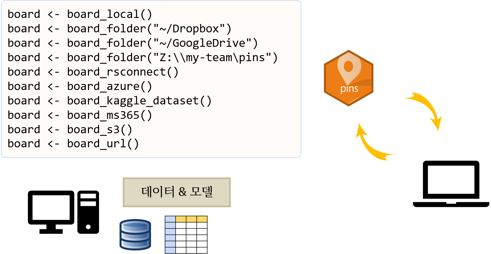
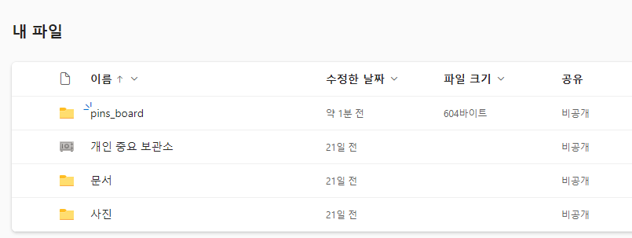

pins - OneDrive
데이터와 모델 혹은 문서를 공유하기 위해서 파일 크기가 크지 않는 경우 board_*() 함수를 사용해서 원하는 곳을 저장소로 지정하여 공유할 수 있다.
예를 들어 마이크로소프트 OneDrive 에 Microsoft365R 패키지를 사용해서 인증과정을 거친 후에 pins 보드를 개인적 용도 혹은 필요한 경우 공개로 전용하여 데이터와 모델을 공유할 수 있다.
Microsoft365R 패키지get_personal_onedrive() 계정인증board_ms365() 함수로 OneDrive 내 저장소를 pins_board로 명명하여 사용
library(pins)
od <- Microsoft365R::get_personal_onedrive()
Loading Microsoft Graph login for tenant 'consumers'
board <- board_ms365(od, "pins_board")
board %>% pin_write(head(mtcars), "mtcars")
Creating new version '20220912T064609Z-bc63f'
Writing to pin 'mtcars'
상기 명령 실행결과 신규로 pins_board 폴더가 생겨난 것이 확인되고 여기에 mtcars 라는 폴더 이름 아래 메타데이터와 원본데이터가 저장된다.

이제 pins 보드에서 데이터를 꺼내사용할 수 있다. pin_read() 함수를 사용해서 mtcars 폴더에 저장된 정보를 가져오게 되며 이를 활용하여 후속 작업을 다른 곳 혹은 타인이 권한이 있다면 작업을 이어서 할 수 있다.
board %>% pin_read("mtcars")
mpg cyl disp hp drat wt qsec vs am gear carb
Mazda RX4 21.0 6 160 110 3.90 2.620 16.46 0 1 4 4
Mazda RX4 Wag 21.0 6 160 110 3.90 2.875 17.02 0 1 4 4
Datsun 710 22.8 4 108 93 3.85 2.320 18.61 1 1 4 1
Hornet 4 Drive 21.4 6 258 110 3.08 3.215 19.44 1 0 3 1
Hornet Sportabout 18.7 8 360 175 3.15 3.440 17.02 0 0 3 2
Valiant 18.1 6 225 105 2.76 3.460 20.22 1 0 3 1